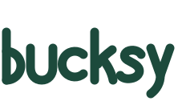

Same name, same promise — four different ideas. Each is shown as a full mark, at 96 / 48 / 32 / 16 px, on a dark surface, and locked up with the wordmark. Tell me the number you want and I'll refine it into the full asset kit (lockups, favicon, app icon, PNG exports).
Concept 1 · name-first

Why it fits: the wordmark's first letter carries the animal. Read once, it's a clean lowercase b; read twice, its ascender is a three-tine antler. A monogram also means the mark and the name can never disagree.
Weakness: two ideas share one shape, so at 16px the fork can read as a stray tick. Likely needs a simplified 16px cut.
Concept 2 · animal-first
Why it fits: the same animal, with no face — so no expression to get wrong and nothing to look childish in five years. A solid silhouette in one pine weight reads calm and expensive rather than cute. The antlers still do double duty as rising ticks.
Weakness: without eyes it's cooler and less friendly; "premium" wins at the cost of some warmth.
Concept 3 · privacy-first
Why it fits: a solid dark disc with the buck cut out of it — the "your money is private" promise made literal. It's the only concept already shaped like an app icon, a favicon and an avatar, so every small surface gets the same silhouette.
Weakness: a filled disc is the most conventional container shape; the detail inside is lost under 24px, so it needs the antler-glyph fallback.
Concept 4 · meaning-first
Why it fits: no head at all — one amber antler that also reads as a rising line chart, branching upward three times. That is the pitch in a single stroke: income that arrives in uneven lumps, still trending up. Cleanest at 16px of the four.
Weakness: the most abstract, so it leans on the wordmark to say "this is money"; the small pine dot at the base carries the whole "buck" idea.